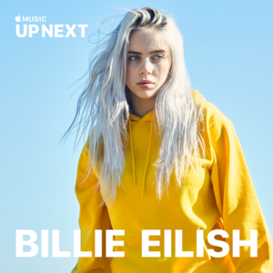
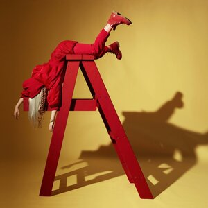

Musicas Mas Escuchadas:
Albumes:
Happier Than Ever
Live at Third Man Records
When We All Fall Asleep, Where Do We Go?

Up Next Session: BIllie Eilish

Dont Smile At Me
Grammys:
- Cancion del Año 2020
- Mejor Artista Nuevo 2020
- Album del Año (When We All Fall Asleep, Where Do We Go?) 2020
- Grabacion del Año (Bad Guy) 2020
- Mejor Album Vocal Pop (When We All Fall Asleep, Where Do We Go?) 2020
- Grabacion del Año (Everyhting I Wanted) 2021
- Mejor Cancion Escrita Para Medios Visuales (No Time To Die) 2021
- Mejor Interpretacion Por Solista (Everyhting I Wanted) 2021
- Cancion del Año (Everyhting I Wanted) 2021